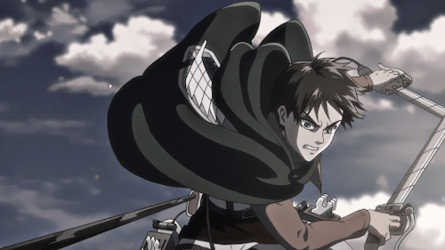

Eren Yeager es el protagonista principal de la serie de manga y anime Shingeki no Kyojin (Attack on Titan), creada por Hajime Isayama.
Eren es un joven que vive en una sociedad amurallada para protegerse de los gigantescos titanes que devoran humanos.
Su vida cambia dramáticamente cuando un Titán Colosal rompe las murallas de su ciudad natal, Shiganshina, y su madre es devorada por un Titán.
Este evento despierta en Eren un profundo odio hacia los titanes y un deseo ferviente de erradicarlos.
Después de la tragedia, Eren se une a la Legión de Reconocimiento junto con sus amigos de infancia,
Mikasa Ackerman y Armin Arlert, con el objetivo de vengar la muerte de su madre y descubrir los secretos detrás de los titanes.
Durante su entrenamiento y misiones, Eren descubre que tiene la capacidad de transformarse en un Titán,
una habilidad que resulta ser clave en la lucha contra los titanes y en la protección de la humanidad.
A lo largo de la serie, Eren evoluciona de un adolescente impulsivo y vengativo a un personaje más complejo y conflictivo,
cuestionando la naturaleza de la libertad, el sacrificio y la verdadera enemistad. Sus decisiones y acciones juegan un papel crucial
en el desarrollo de la trama y en la revelación de los secretos oscuros del mundo en el que vive.
Eren Yeager es un personaje que simboliza la lucha por la libertad y la búsqueda de la verdad,
a pesar de los costos personales y las consecuencias morales que ello conlleva.
